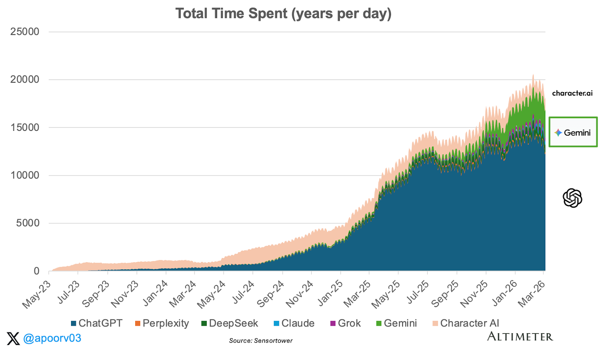
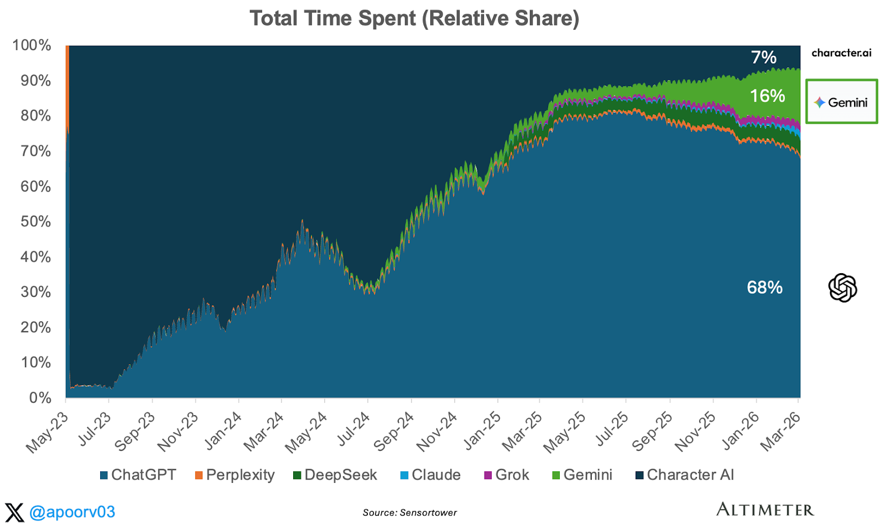
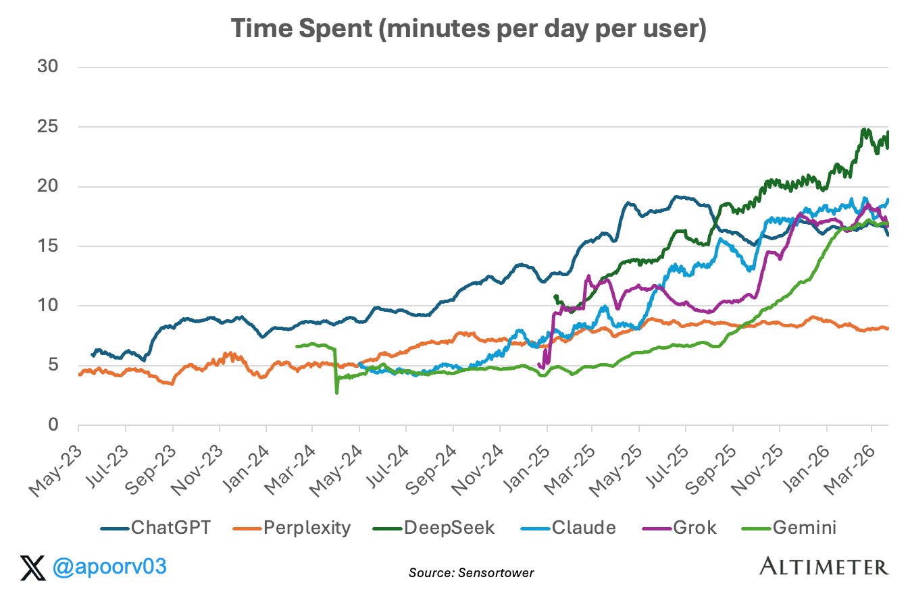
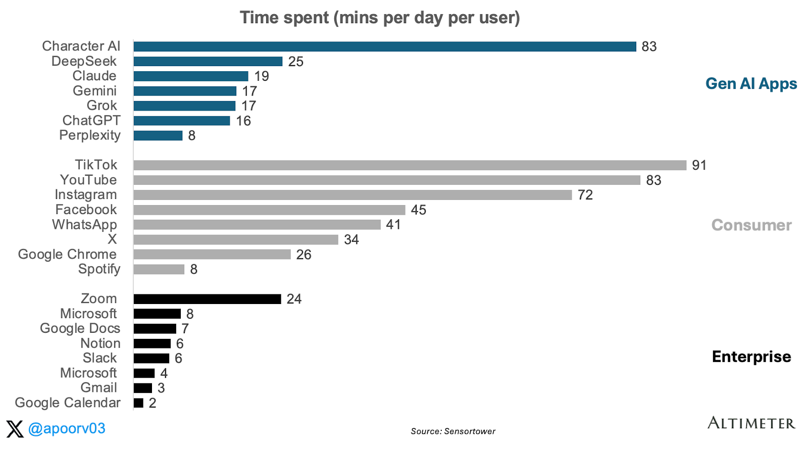
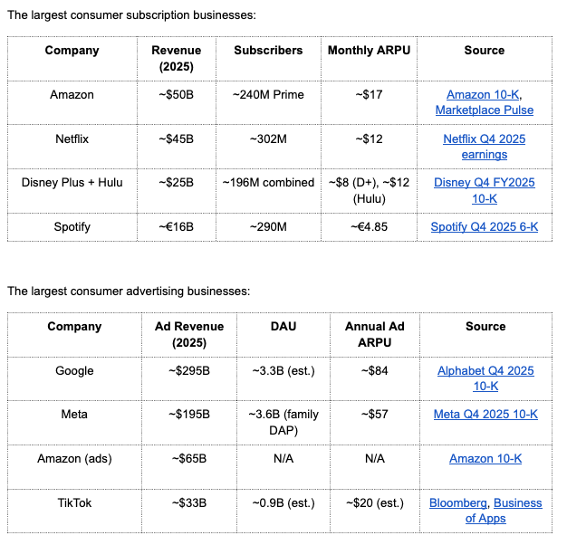
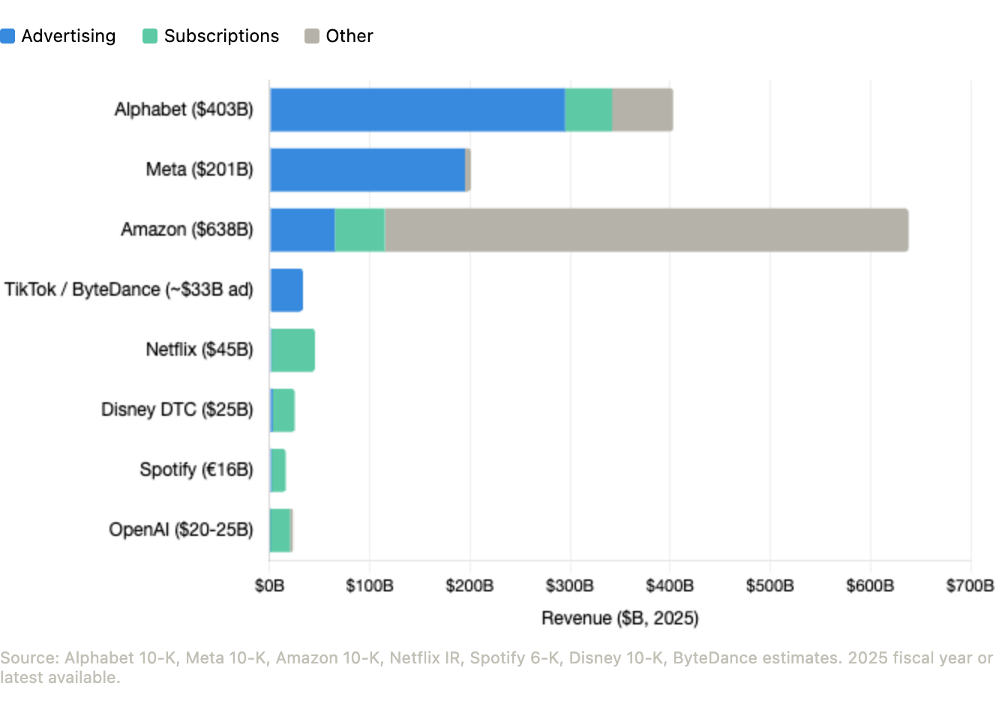

在第一部分中，我展示了ChatGPT在用户量上已经遥遥领先。9亿周活跃用户，约70%的市场份额，是唯一一个朝着核心实用工具地位迈进的AI应用。在第二部分中，我展示了这些数据背后的用户参与度是真实的。WAU:MAU比率的持续改善、罕见的留存微笑曲线，以及在工作场景媲美Slack和Gmail、在家用场景媲美X和Spotify的粘性指标。
这两篇文章讨论的是收入=价格×数量这个公式中的Q（数量）。有多少用户，他们回来的频率有多高，以及使用习惯是否真实存在。这篇文章讨论的是P（价格）。你实际上能收多少钱？
使用时间是连接这两者的桥梁。在消费科技领域，时间是货币化的原材料。订阅业务将时间转化为感知价值和支付意愿。广告业务将时间转化为广告库存。两者都始于同一个输入：你的产品占据了用户一天中的多少时间？
先给出结论：我认为领先消费级AI应用的广告收入机会可能大于订阅收入机会。原因很简单：消费级AI正在积累与那些最大的互联网企业相同的原材料——时间和注意力。广告收入公式很直接：广告收入=总时间×广告量×广告价格。从这三个变量来看，数据表明：
- AI应用中的总使用时间正在爆发式增长。AI的用户心智份额遵循与用户数量相同的幂律分布，即使考虑到每个用户的使用时间差异也是如此。
- 每个用户的使用时间在增加→广告量巨大且持续增长。AI应用落后于消费级基准，但开始赶超企业级应用。ChatGPT的行为更像一个工作和生产力工具，而不是社交信息流。这是一个强烈的信号，表明其随时间增加广告负载的能力。
- ChatGPT的查询具有比搜索更强的意图信号→有竞争力的广告定价。更多内容见下文第三节。
让我们深入分析。
1. 总时间：ChatGPT占据消费级AI 68%的注意力
生成式AI应用的总使用时间在过去两年增长了约10倍，仅2025年一年就增长了3.6倍。没有任何应用类别发展得如此之快。

有几个点值得注意。首先，2025年1月附近的拐点非常显著。2025年上半年总使用时间大约翻了一番，这得益于ChatGPT扩展到语音、图像生成和搜索功能。其次，Gemini大约在2024年中出现并取得了显著增长，但仍是一个遥远的第二名。

ChatGPT占据了AI总使用时间的68%。Gemini占16%。其他所有应用合计约占16%。这种集中度使得ChatGPT最有可能成为第一个规模化AI原生广告业务诞生的地方。这也解释了为什么OpenAI比那些占据注意力份额较小的同行更早、更积极地尝试货币化。这一点也很重要，因为你无法在一个规模不足的平台上真正开展广告业务。
用户在哪里花费时间，哪里就是可供广告商使用的房地产。而其中68%的库存都在一个产品——ChatGPT之内。对于评估AI原生广告投放的广告商来说，注意力集中在单一产品这一事实不容忽视。
2. 每个用户的使用时间在上升。这意味着广告的展示面更大。

这张图表上的每一个AI应用都在上升。自2023年初以来，ChatGPT的每个用户使用时间大约增长了三倍。Claude、Gemini和Grok在过去一年中都大幅攀升。趋势很明确：人们在AI应用上花的时间越来越多，而不仅仅是下载后就离开。
但是，相对于我们已经了解的消费级和企业级应用，这个使用时间处在什么水平呢？

对比消费级应用：仍然低很多。ChatGPT每天16分钟，远低于TikTok、YouTube、Instagram等应用。但这种差距其实不太公平，因为ChatGPT缺少推动消费级应用大量使用时长的两样东西。
第一，它没有社交网络效应。TikTok和Instagram之所以有粘性，部分原因在于你的朋友、创作者和社区都在那里。内容是根据你个性化定制的，由你关注的人生成。这产生了一种吸引力，让你不断回来、不断刷下去。ChatGPT完全没有这些。没有信息流，没有关注者，没有社交图谱。
第二，它没有多巴胺循环。你不会打开ChatGPT去刷猫咪视频或看看前男友/女友在做什么。消费级社交应用是为可变奖励参与度而设计的：你永远不知道下一次滑动是无聊还是有趣，这种不可预测性让你欲罢不能。AI助手则恰恰相反。你带着一个特定任务来，得到一个答案，然后离开。
对比企业级应用：高于大多数。与企业级应用的比较更有用，但有一个重要提醒：这是来自SensorTower的纯移动端数据，因此像Slack、Gmail和Google Docs这类以桌面端为主的产品在这里被低估了。即便如此，这个信号仍然值得注意。仅看在移动端，ChatGPT已经像一个高频生产力工具了。这很重要，因为生产力产品的货币化效果很好，即使使用时间远低于消费娱乐类应用。
Slack的收费是每用户每月7-12美元。如果AI助手已经达到这种水平的日常注意力，同时拥有消费级规模，那么货币化的空间是相当可观的。
每个用户使用时间的上升对收入公式意味着两件事：更多的感知价值来支持订阅支付意愿，以及更多展示广告的空间。两者都指向正确的方向。
3. 收入机会
3a. 为什么广告可以超越订阅规模
现在来看价格方面：所有这些注意力到底值多少钱？在消费级规模下，最重要的两种货币化模式是订阅和广告。关键点不是订阅模式弱，而是最大的消费互联网企业在历史上通过广告获得的收入远高于通过订阅获得的收入。

规模差距是关键。仅Google的广告业务收入就大约是Netflix收入的5倍。Meta的广告业务大约是4倍。就连Amazon的广告业务——十年前几乎还不存在——如今也比Netflix大。自然而然的问题是：更高的订阅ARPU是否能弥补较小的付费用户基数？对某些业务来说确实如此。但在大规模下，来自广告的更大货币化基数往往胜出。

Alphabet和Amazon尤其有趣，因为它们两种模式都有。在这两个案例中，广告业务都比订阅业务更大，且增长更快。Netflix、Disney和Spotify几乎完全是订阅模式。Meta和TikTok几乎完全是广告模式。今天的OpenAI几乎完全是订阅收入，加上最近推出的一些广告收入，覆盖了其在美国95%免费用户中的一小部分。这意味着一大片注意力池目前几乎不产生任何收入。OpenAI在这里是先行者，但同样的免费用户货币化问题适用于每一个拥有大量未付费用户基础的AI应用。
3b. AI注意力如何定价
广告收入 = 总时间 × 广告量 × 广告价格
- 总时间：我们从第一和第二节已经知道总时间。ChatGPT有约9亿周活跃用户，DAU:MAU为45%，移动端每天约16分钟。
- 广告量（或称广告负载）：是一个产品决策。你每个会话展示多少广告？Google在每个搜索结果页展示3-4个广告。Meta在信息流中每3-5条帖子展示一个广告。ChatGPT目前每个对话最多展示一个广告，且仅对约5%的移动用户展示。这种克制在维护信任方面是明智的，但这也意味着广告负载变量目前非常低。
- 广告价格（CPM）是广告商愿意为每千次展示支付的价格。这就是事情变得有趣的地方，因为并非所有注意力都被同等定价。CPM最终取决于一个问题：这个用户会买东西吗？这又分解为三个要素：意图（用户是否正在做决策？）、归因（广告商能否将广告追溯到购买行为？）、以及受众质量（这个用户有消费能力吗？）。
最大的广告业务各自在这方面有不同的优势。Google搜索具有强烈的意图信号，因为当有人输入"2026年最佳抵押贷款利率"时，他们是在实时宣示商业意图。CPM为15-200+美元，视品类而定。全球每用户年收入约84美元。Meta的意图较弱，但使用时间巨大。用户每天滚动浏览30-90分钟。Meta通过非凡的定向精准度来弥补，从行为和人际图谱中推断意图。每用户年收入约57美元。YouTube介于两者之间：中等CPM、长会话时长、视频创意。
总结来说，Google出售意图。Meta出售注意力。YouTube出售观看时间。
3c. AI助手的定位——ChatGPT案例研究
我们以ChatGPT作为测试案例，因为它拥有最大的免费用户基础和最多的广告数据可供参考。ChatGPT的广告定价很可能更接近Google而非Meta，并且在那些对话上下文能够增强商业意图的品类中可能具有优势。
当有人打开ChatGPT询问笔记本电脑推荐、比较保险计划或规划家庭旅行时，这种交互类似于搜索，但具有更丰富的上下文。用户通常在一个提示中提供预算、偏好、约束条件和意图。这使得商业信号对广告商来说更易读，尽管这并不自动意味着每一次AI查询都比搜索查询更有价值。
我预计ChatGPT的实际CPM至少与Google搜索相当，在某些品类中可能更高。早期数据支持这一点。OpenAI的优质广告位定价约为60美元CPM，远高于展示广告，处于高意图搜索的范围内。
目前ChatGPT拥有约8-9亿免费用户（占WAU的95%）。如果ChatGPT能每个免费用户每年产生30美元的广告收入，那么在现有规模下意味着250亿美元的广告收入。作为参考，Meta每用户产生57美元，Google每用户产生84美元，因此对于一个高意图的登录产品来说，30美元并不激进。
早期数据显示对信任指标没有影响，但测试仍处于早期阶段。将广告规模扩大20倍而不破坏建立使用习惯的产品体验，这才是真正的执行挑战。这个机会尚未得到验证的主要原因是，并非所有的AI使用时间都具有商业价值。ChatGPT的相当一部分使用是信息获取型、创意型或生产力导向型，而非交易型。而且，与信息流或搜索结果页不同，对话式界面给你提供的植入广告的明显位置更少，且不损害信任。因此，上行空间是真实的，但执行约束也同样真实：OpenAI必须在货币化习惯的同时，不破坏创造这一习惯的产品本身。
还有一个更乐观的可能性。AI不仅创造广告库存。它可以创造全新的广告格式。对话式广告——产品推荐融入对话之中而非生硬地贴在旁边——实际上可以改善用户体验而非降低它。想象一下，你让ChatGPT规划一个周末旅行，它根据你独特的偏好和记忆，在对话中为你推荐一个相关的酒店优惠。那不是打断。那是功能。如果AI能够实现超个性化、代理行为以及与品牌的真正对话式互动，那么广告机会不仅可能很大，而且可能与今天存在的任何广告体验有本质上的不同。
3d. 为什么Google可以等待
Google的策略与OpenAI明显不同。Google多次表示没有计划在Gemini中投放广告。今年1月在达沃斯，DeepMind CEO Demis Hassabis表示他对OpenAI在ChatGPT中急于推出广告感到"惊讶"。Google Ads副总裁Dan Taylor于2025年12月在X上表示："Gemini应用中没有广告，目前也没有计划改变这一点。"
这是只有Google才能拥有的战略奢侈。Google在搜索领域已经拥有一个2950亿美元的广告现金机器。它可以补贴Gemini作为亏损引导产品，用无广告体验来增长用户和加深参与度，同时通过其现有的搜索基础设施（AI概要和AI模式已经承载广告）来将AI变现。OpenAI没有这种奢侈。由于没有独立的现金奶牛可以依靠，它必须直接通过聊天界面进行货币化。
目前，Gemini仅通过订阅变现。每个用户的收入机会远小于OpenAI正在构建的广告+订阅模式。但Google玩的是不同的游戏。它在保护助手以留住用户，同时积极变现搜索结果页。随着免费用户推理成本上升和Gemini用户基数突破7.5亿MAU，这一策略能否持续是一个开放性问题。在某个时间点，运营一个大规模免费AI助手的经济学可能迫使连Google也不得不采取行动。
总结
这个系列提出了一个简单的问题：消费级AI仅仅是大量使用，还是正在成为一门真正的生意？第一部分展示了触达范围。第二部分展示了使用习惯。第三部分表明，货币化机会可能比许多人意识到的要大。
被低估的一点是，领先的AI助手——首当其冲是ChatGPT——已经具备了那些最大消费互联网企业最善于变现的属性：规模化、重复性的注意力。其周活跃用户中大约95%仍然是免费用户，这意味着大部分注意力今天几乎没有被货币化。
这并不能保证建立Google或Meta规模的广告业务。对话式界面更难干净地变现，而信任是产品最宝贵的资产。但如果OpenAI能够证明广告可以存在于一个高意图的助手中而不破坏用户体验，那么长期广告机会最终可能超过订阅业务。如果这种情况发生，Google真正的战略问题将不再是Gemini是否应该保持无广告。而是它还能承受多久。
感谢Sarah Friar和Fidji Simo审阅本文及本系列各篇文章的初稿。
本文使用的数据来源包括SensorTower。
本通讯中呈现的信息仅代表作者观点，不一定反映任何其他人或实体的观点，包括Altimeter Capital Management, LP（"Altimeter"）。所提供的信息据信来自可靠来源，但对任何不准确之处不承担任何责任。本文仅供参考，不应视为投资建议。过往表现不保证未来结果。Altimeter是一家在美国证券交易委员会注册的投资顾问。注册并不暗示一定水平的技能或培训。Altimeter及其客户交易公开证券，并已和/或可能对本文提及的公司进行投资或做出投资决策。本文表达的观点是作者的观点，而非Altimeter或其客户的观点，Altimeter及其客户保留做出投资决策或进行交易活动的权利，这些决策或活动可能与本文表达的观点一致和/或不一致。本文及所呈现的信息仅供信息参考。本文表达的观点仅代表作者本人，不构成出售、推荐购买或招揽购买任何证券的要约，也不构成对任何投资产品或服务的推荐。虽然本文所包含的某些信息来自被认为可靠的来源，但作者及其任何雇主或关联方均未独立核实这些信息，且其准确性和完整性无法保证。因此，对于本信息的公平性、准确性、及时性或完整性，不作任何明示或暗示的陈述或保证，也不应依赖于此。作者及所有雇主及其关联人员对本信息不承担任何责任，也没有义务更新本文中的信息或分析。